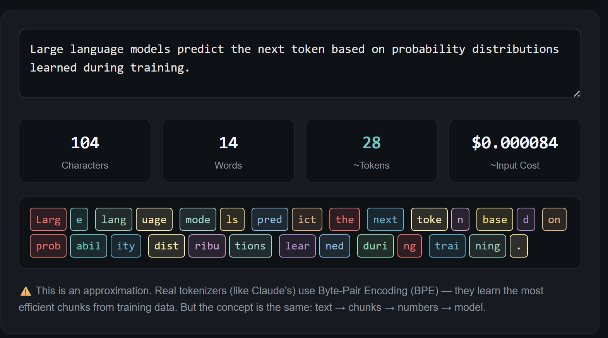
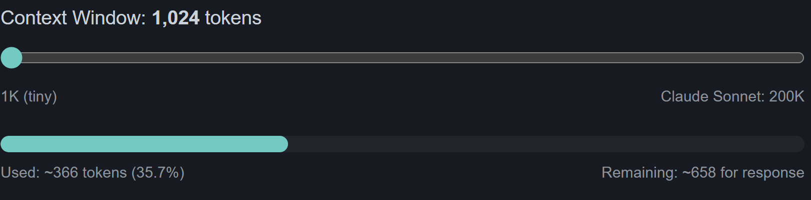
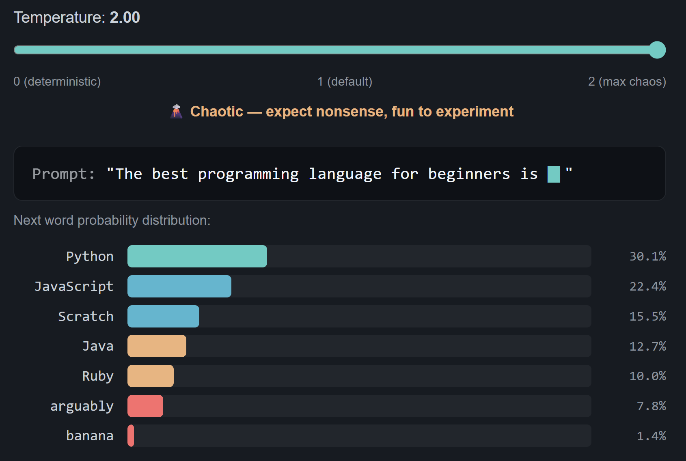
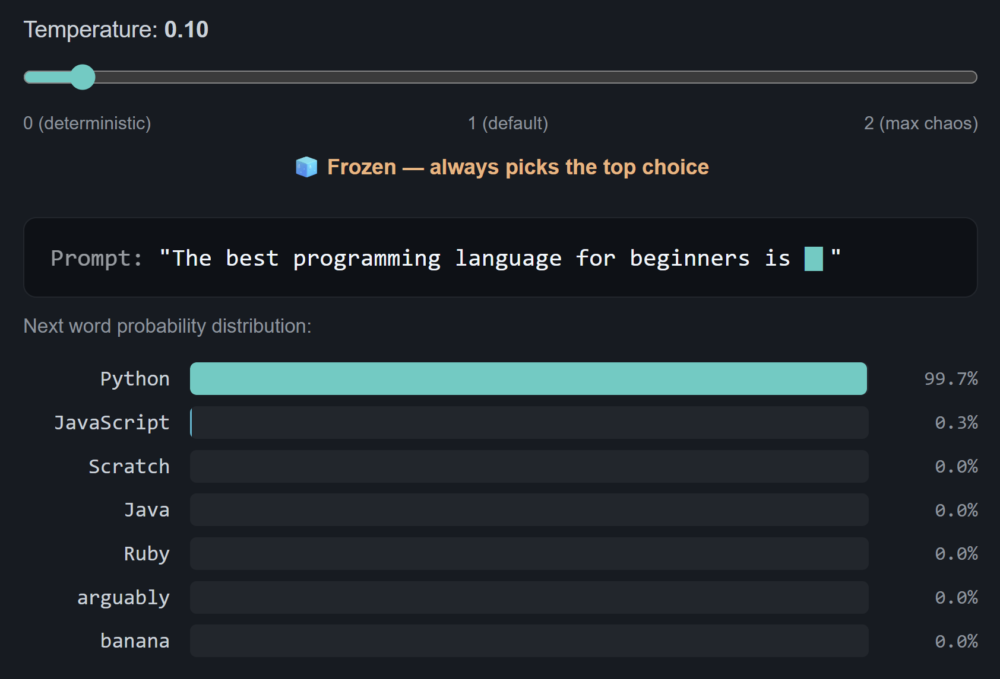
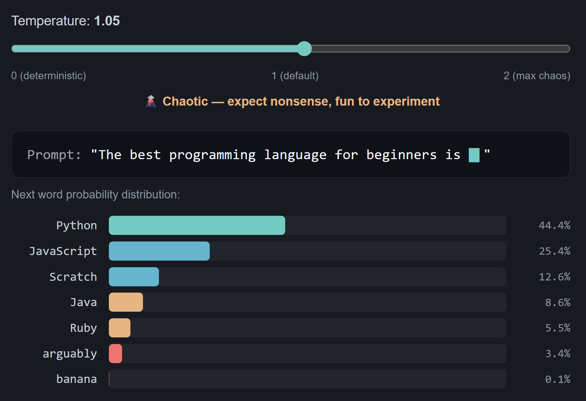
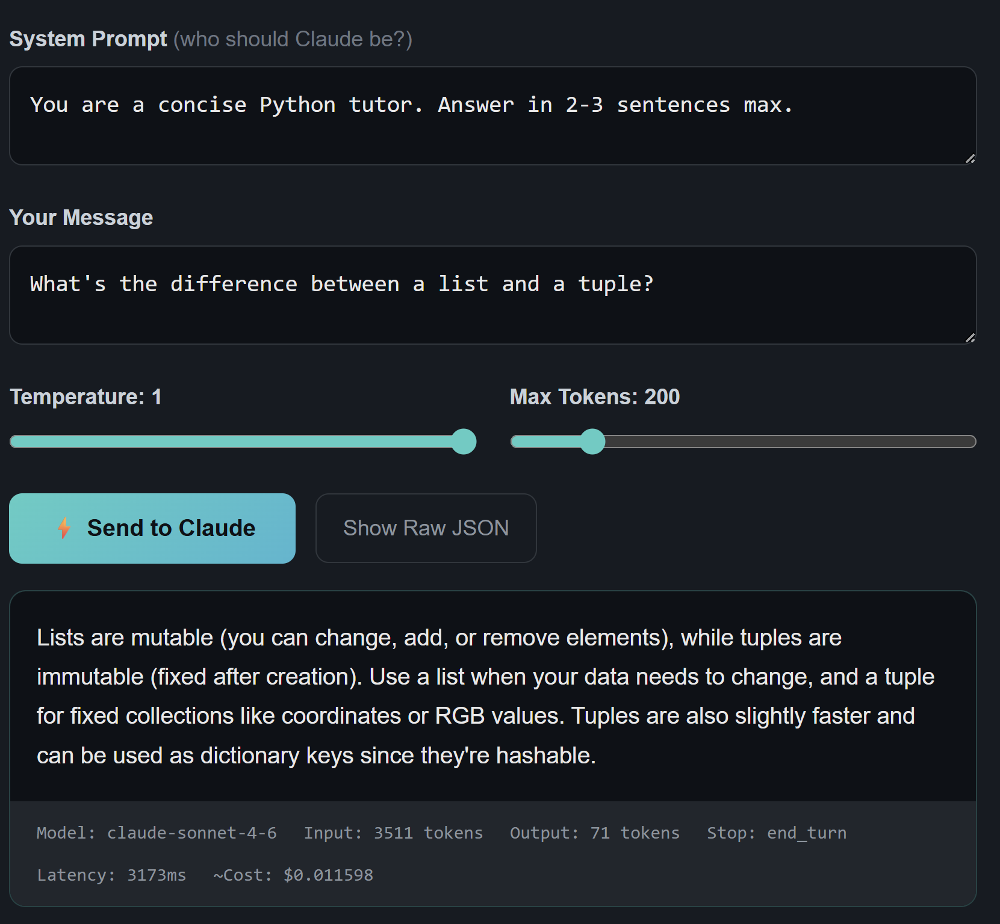
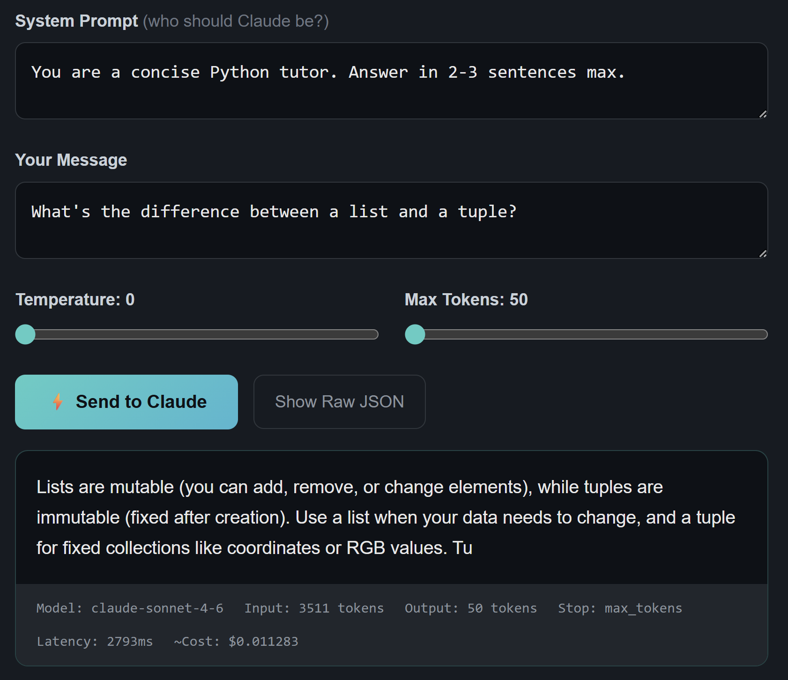

You don't read letter-by-letter. Neither does an LLM. It chunks text into tokens, usually ~4 characters or ~¾ of a word.
"Unbelievable" doesn't go in as one piece. It becomes:
The model thinks in these chunks. But here's the thing most people miss: the model doesn't see text at all. It sees numbers. Token IDs.

This is an approximation. Real tokenizers (like Claude's) use Byte-Pair Encoding (BPE). They learn the most efficient chunks from training data. But the concept is the same: text → chunks → numbers → model.
Because cost and limits are measured in tokens. When Claude says "200K context window," that's 200,000 tokens, not characters. And you're billed per token on API calls.
Understanding token count = understanding cost. That's not theory. That's your bill.
Imagine you're taking an exam, but you can only see a fixed number of pages of notes at once. That's the context window.
Everything (system prompt, conversation history, your question, AND the response) must fit inside it. Once it's full, old stuff gets dropped. This is why long conversations sometimes feel like Claude lost context. It literally can't see the earlier messages anymore.

There's no persistent memory between calls. Each request is a fresh start. The model sees only what you put in that request.
This is exactly why RAG (Retrieval-Augmented Generation) exists. Instead of stuffing everything into the context window, you retrieve only what's relevant and inject it. Smart retrieval > brute force context.
Temperature controls randomness. Think of it as a spectrum from careful accountant to unhinged poet.
Always picks the most likely next word. A careful accountant. Perfect for code, structured data, factual Q&A.
A poet after two coffees. Good balance of coherence and creativity. Fine for most tasks.
That poet after six espressos. Expect nonsense. Fun to experiment with, but don't ship it.

At temperature 2, "banana" has a 1.4% chance of being the next word after "The best programming language for beginners is..." That's chaos. That's also why you keep temperature low for code.


Every ChatGPT conversation, every Claude response? It's just an API call with a nice UI on top. Here's what's actually happening.
You set four things: the system prompt (who Claude should be), the user message (what you're asking), the temperature (how creative), and max tokens (response length limit).


Model: Which version of Claude processed your request. Different models = different costs and capabilities.
Input tokens: How many tokens your system prompt + message consumed. This is your input cost.
Output tokens: How many tokens the response used. Input + Output = total cost.
Latency & Cost: Time to respond and what it cost. At ~$0.01 per call, this is production-cheap.
Strip away the hype and here's what an LLM actually is:
You don't need to understand transformer architecture or attention mechanisms to build with LLMs. But you do need to understand this pipeline. Because every decision you make (prompt design, RAG vs fine-tuning, model selection, cost optimisation) flows from it.
The model has the intelligence. Your job is knowing where to point it, what to feed it, and how to read what comes back.